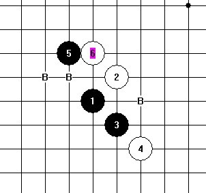
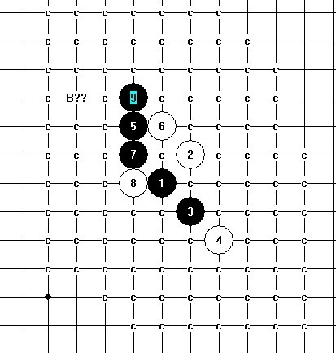
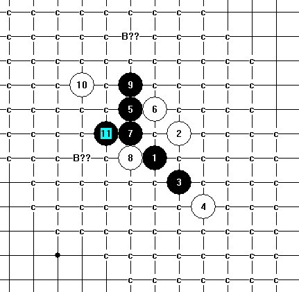

这个点也困扰我好久 J6-G10
首页
五子棋交流
#1 这个点也困扰我好久 J6-G10 作者：安娜制作所 发表时间：2010-11-1 8:41:00

#2 Re:这个点也困扰我好久 J6-G10 作者：米 发表时间：2010-11-1 12:21:30
=======上图对应的爱五子棋谱代码如下，以便你拆解：========
h8i9i7j6g10h10g9g8g11e11f9e8f11e9e12d13f7
======================================================
=======上图对应的爱五子棋谱代码如下，以便你拆解：========
h8i9i7j6g10h10g9g8g11e11f9g13f7
======================================================楼主图中打问号的如上解决。
［ 茗弈宽容 于 2010-11-1 14:07:48 时花20金币送鲜花一朵］
#3 Re:这个点也困扰我好久 J6-G10 作者：安娜制作所 发表时间：2010-11-1 16:20:08
谢谢米老师!非常感谢!
#4 Re:这个点也困扰我好久 J6-G10 作者：gerbo 发表时间：2010-11-1 16:59:52
安娜这个地摊，在侯军学棋的谱中杀了。可惜他躲起来了。论坛高手如云啊~~佩服佩服~~
#5 Re:这个点也困扰我好久 J6-G10 作者：安娜制作所 发表时间：2010-11-2 8:31:07
呵呵,大家都知道杀了!我做完全终结却还有盲点!
#6 Re:这个点也困扰我好久 J6-G10 作者：行云流水 发表时间：2010-11-2 17:39:26
通水月变化
#7 Re:这个点也困扰我好久 J6-G10 作者：淡红的秋樱 发表时间：2010-11-2 20:49:52
=======上图对应的爱五子棋谱代码如下，以便你拆解：========
h8i9g10h10g9g8i7j6g11e11f9e9e8d7h7f7h6h9e6e7c7i8f4
======================================================通水月变化，参考本论坛水月地毯精简谱，我都不用打开自己棋谱就能找到了。
［此帖子已被 淡红的秋樱 在 2010-11-2 20:50:56 编辑过］
#8 Re:这个点也困扰我好久 J6-G10 作者：淡红的秋樱 发表时间：2010-11-2 20:54:06
=======上图对应的爱五子棋谱代码如下，以便你拆解：========
h8i9g10h10g9g8i7j6g11e11f9e8f11e9e12d13e7g12h6h7g5f4i5
======================================================同样参考本论坛水月地毯精简谱。
ShowPost.asp?ThreadID=3501
［此帖子已被 淡红的秋樱 在 2010-11-2 20:55:21 编辑过］